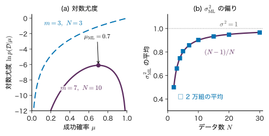
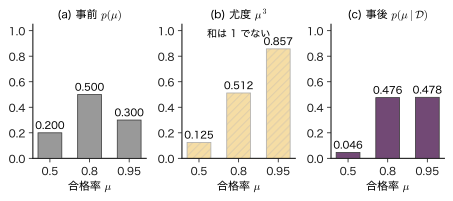
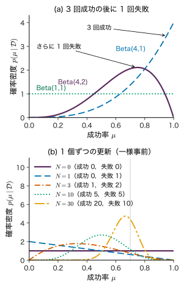
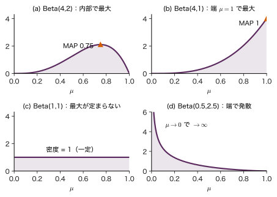
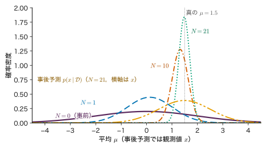
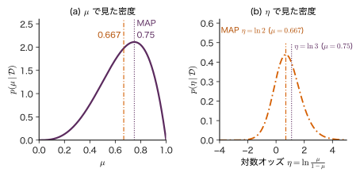
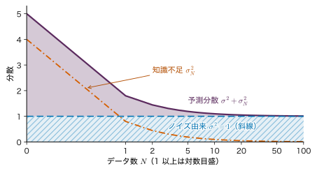
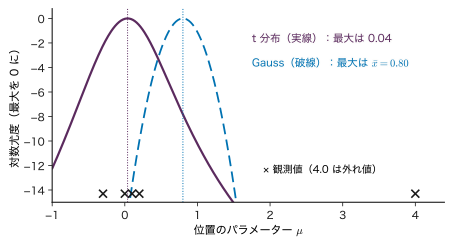

第4章最尤推定・MAP 推定・ベイズ推定 — データから分布を知る
- 新しい条件で焼結体を 3 個焼いたら，3 個とも合格した．この条件の合格率は 100% と言ってよいか．
- 推定値に「どれだけ確かか」を添えるにはどうすればよいか．データが 3 個のときと 300 個のときで，答え方はどう変わるか．
- 文献に載っている値（事前の知識）と自分の測定値が少し食い違うとき，両者をどう合わせればよいか．
3 個焼いて 3 個とも合格した，という結果だけを見れば，合格率の推定値は $3/3=1$，つまり 100% である．しかし，この条件で量産を始めて「不良は絶対に出ない」と考える人はいないだろう．合格率が 0.8 でも，3 個続けて合格する確率は $0.8^{3}\approx0.51$ もある．3 個のデータは「合格率が高そうだ」とは言っていても，「1 だ」とまでは言っていない．この「どこまで言えるか」を数で表すのが本章の目標である．
第2章では，同じ式 $p(\data\mid\theta)$ をパラメーター $\theta$ の関数と見たものを尤度と呼び，Bayes の定理で「原因の確率」を逆算した．本章ではこの二つを組み合わせて，データからパラメーターを推定する三つの方法を順に組み立てる．尤度を最大にする最尤推定（4.2 節），事前分布を掛けた事後分布の最大点をとる MAP 推定，事後分布そのものを答えにするベイズ推定（4.3〜4.5 節）である．成功率の推定には Beta 分布，平均の推定には Gauss 分布を事前分布に使うと，事後分布が手で計算できる．後半では，予測の不確かさが「ノイズ由来」と「知識不足に由来」の二つに分かれること（4.8 節）と，仮定の置き方が結果をどう変えるか（4.9 節）を調べる．本章の最後の考え方は，第12章のガウス過程や第13章のベイズ最適化の土台になる．
- 点推定と「分布による推定」の違いを，3 回中 3 回合格の例で説明できる．
- Bernoulli 分布と Gauss 分布の最尤推定量を，対数尤度の微分から導ける．$\sigma^{2}_{\mathrm{ML}}$ が偏ることを導き，不偏分散と比べられる．
- Beta 事前分布と Bernoulli 尤度から事後分布を導き，事後平均・MAP 推定値・事後予測確率を手で計算できる．MAP の式が使える条件を正確に言える．
- 分散が既知の Gauss 分布の平均について，平方完成で事後分布と事後予測分布を導ける．
- 予測分散 $\sigma^{2}+\sigma_N^{2}$ を，データを増やしても減らない成分と減る成分に分けて説明できる．
- 事前分布・尤度の選び方が結果に与える影響と，事後確率・p 値・信頼区間の違いを説明できる．
入門ルートで読む節：4.1，4.2，4.3，4.4，4.5，4.12．「詳しいルート」の印が付いた節は，初めて読むときは飛ばしてよい．
4.1 推定とは何か — 点で答えるか，分布で答えるか
4.1.1 何をしたいのか
確率分布の形（Bernoulli 分布，Gauss 分布など）は分かっていても，その中のパラメーター（成功率 $\mu$，平均 $\mu$，分散 $\sigma^{2}$ など）の値は分からないことが多い．手元にあるのは，その分布から得られたデータ $\data=\{x_1,\dots,x_N\}$ だけである．データからパラメーターについて何かを言うことを推定（estimation）という．
推定の答え方には二通りある．
- 点推定：パラメーターの値を 1 つ答える．「合格率は 1」「平均は 607 HV」．
- 分布による推定：パラメーターがどの値をどれくらいのもっともらしさでとるかを，確率分布として答える．「合格率は 0.8 前後で，0.4 から 1 の間にある確率が 95%」．
後者では，パラメーター自体を確率変数とみなす．これは「合格率が毎回ゆらいでいる」という意味ではない．合格率はある 1 つの値に決まっているが，私たちがそれを知らない．その知らなさの程度を確率分布で表す，という立場である（4.11 節で詳しく述べる）．
本章で扱う三つの方法の関係を図4.1 に示す．最尤推定はデータだけから点を答える．ベイズ推定はデータを見る前の知識（事前分布）とデータ（尤度）を Bayes の定理で組み合わせて事後分布を作り，そこから最頻値（MAP 推定値），平均，区間，次の観測の予測を取り出す．
4.1.2 記号
記号：本章で使う文字
- 成功・失敗の試行（合否，割れの有無など）：$x_n\in\{0,1\}$（1 が成功），成功の確率 $\mu\in[0,1]$．第2章 2.7 節で $\theta$ と書いた成功確率を，本章では Bernoulli 分布の慣例に従って $\mu$ と書く．$N$ 回中の成功回数を $m$，失敗回数を $l=N-m$ とする．
- 連続な測定値：$x_n\in\R$，Gauss 分布 $\Normal(x\mid\mu,\sigma^{2})$ の平均 $\mu$ と分散 $\sigma^{2}$（第 2 引数は分散）．
- パラメーター一般は $\theta$．推定値には添字を付ける：最尤推定値 $\mu_{\mathrm{ML}}$（maximum likelihood），MAP 推定値 $\mu_{\mathrm{MAP}}$（maximum a posteriori）．
- データ $\data$ を条件とする確率には必ず「$\mid\data$」を書く．$p(\mu)$ は事前分布，$p(\mu\mid\data)$ は事後分布であり，別の関数である．
例題4.1 3 回中 3 回合格は何を言っているか
合格率 $\mu$ の工程で，独立に 3 個焼いて 3 個とも合格する確率は $\mu^{3}$ である．(1) $\mu=0.5,\ 0.7,\ 0.8,\ 1.0$ のそれぞれについて，3 回中 3 回合格する確率を求めよ．(2) この結果から「合格率は 1 である」と結論してよいか．
解答 (1) 各回が独立なので積になる（第2章 2.3 節の独立の定義を 3 個に広げたもの）．$0.5^{3}=0.125$，$0.7^{3}=0.343$，$0.8^{3}=0.512$，$1.0^{3}=1$．
(2) 「3 回中 3 回」は $\mu=1$ のときに最も起こりやすい（確率 1）．しかし $\mu=0.8$ でも約半分（0.512），$\mu=0.7$ でも約 3 分の 1 の確率で起こる．つまりこのデータは，$\mu=0.7$ や $0.8$ を否定していない．「最も起こりやすくする値」を 1 つ答えるのが次節の最尤推定であり，ここでは $\mu_{\mathrm{ML}}=1$ になる．しかし，それだけを報告すると「0.7 でもおかしくない」という情報が落ちる．その情報を残すのが 4.3 節以降の分布による推定である．
4.2 最尤推定 — データを最もよく説明する値
4.2.1 最尤推定の考え方
データ $\data$ が独立同分布（i.i.d.）の $N$ 個の観測で，各観測が $p(x\mid\theta)$ に従うとき，尤度は積，対数尤度は和になる（第2章 2.7 節）．
$$ \begin{aligned} p(\data\mid\theta)&=\prod_{n=1}^{N}p(x_n\mid\theta),\\ \ln p(\data\mid\theta)&=\sum_{n=1}^{N}\ln p(x_n\mid\theta) \end{aligned} $$定義4.1 最尤推定
尤度 $p(\data\mid\theta)$ を最大にする $\theta$ を最尤推定値（maximum likelihood estimate）といい，$\theta_{\mathrm{ML}}$ と書く．
\begin{equation} \begin{aligned} \theta_{\mathrm{ML}}&=\argmax_{\theta}\,p(\data\mid\theta)\\ &=\argmax_{\theta}\,\ln p(\data\mid\theta) \end{aligned} \label{eq:4-ml-def} \end{equation}$\ln$ は単調増加なので，尤度と対数尤度は同じ点で最大になる．データを確率変数とみて，$\theta_{\mathrm{ML}}$ をデータの関数と見たものを最尤推定量（estimator）という．
最尤推定は「観測されたデータを最も起こりやすくするパラメーター」を選ぶ．微分できるなら，対数尤度の導関数を 0 とおいて解けばよい．
4.2.2 Bernoulli 分布の成功率
1 回の試行の結果 $x\in\{0,1\}$ が Bernoulli 分布 $p(x\mid\mu)=\mu^{x}(1-\mu)^{1-x}$ に従うとする（$x=1$ なら $\mu$，$x=0$ なら $1-\mu$ になる）．$N$ 回の結果 $\data=\{x_1,\dots,x_N\}$ のうち成功が $m=\sum_n x_n$ 回，失敗が $l=N-m$ 回なら，尤度は
\begin{equation} \begin{aligned} p(\data\mid\mu)&=\prod_{n=1}^{N}\mu^{x_n}(1-\mu)^{1-x_n}\\ &=\mu^{m}(1-\mu)^{l} \end{aligned} \label{eq:4-bern-lik} \end{equation}である（指数を足し合わせた：$\sum_n x_n=m$，$\sum_n(1-x_n)=N-m=l$）．尤度は成功・失敗の回数だけで決まり，順番によらない．
導出：$\mu_{\mathrm{ML}}=m/N$
$0\lt\mu\lt1$ で，対数尤度は
$$ \ln p(\data\mid\mu)=m\ln\mu+l\ln(1-\mu). $$$\mu$ で微分して 0 とおく．
$$ \diff{}{\mu}\ln p(\data\mid\mu)=\frac{m}{\mu}-\frac{l}{1-\mu}=0 . $$両辺に $\mu(1-\mu)\gt0$ を掛けると $m(1-\mu)-l\mu=0$，すなわち $m=(m+l)\mu=N\mu$．よって
\begin{equation} \mu_{\mathrm{ML}}=\frac{m}{N} \label{eq:4-bern-ml} \end{equation}2 階微分 $-m/\mu^{2}-l/(1-\mu)^{2}$ は負なので（$m,l$ の少なくとも一方は正），これは最大である．$m=N$（全部成功）のときは $\ln p=N\ln\mu$ が $\mu$ について単調増加なので，最大は区間の端 $\mu=1$ にあり，やはり式 \eqref{eq:4-bern-ml} の値 $N/N=1$ と一致する．$m=0$ なら $\mu=0$ である．
（導出終わり）
成功率の最尤推定値は，直観どおり「成功の割合」である．図4.2(a) に，10 回中 7 回と 3 回中 3 回の対数尤度を示す．前者は $\mu=0.7$ で山になるが，後者は $\mu=1$ に向かって上がり続け，山を作らない．3 回中 3 回の最尤推定値が 1 になるのは，データがたまたま全部成功だったからであり，「この先も絶対に不良が出ない」ことを意味しない．
4.2.3 Gauss 分布の平均と分散
測定値 $x_1,\dots,x_N$ が i.i.d. で Gauss 分布 $\Normal(x\mid\mu,\sigma^{2})=\dfrac{1}{\sqrt{2\pi\sigma^{2}}}\exp\!\left[-\dfrac{(x-\mu)^{2}}{2\sigma^{2}}\right]$ に従うとする．$\mu$ と $\sigma^{2}$ がどちらも未知のとき，対数尤度は
\begin{equation} \begin{aligned} &\ln p(\data\mid\mu,\sigma^{2})\\ &\quad=-\frac{N}{2}\ln(2\pi\sigma^{2})\\ &\qquad-\frac{1}{2\sigma^{2}}\sum_{n=1}^{N}(x_n-\mu)^{2} \end{aligned} \label{eq:4-gauss-loglik} \end{equation}である（各項の $\ln$ をとって $N$ 個足した）．$\mu$ と $\sigma^{2}$ の 2 変数関数として最大にする．
導出：$\mu_{\mathrm{ML}}$ と $\sigma^{2}_{\mathrm{ML}}$
$\mu$ についての偏微分（大学数学 第6章 6.2）：$(x_n-\mu)^{2}$ を $\mu$ で微分すると $-2(x_n-\mu)$ なので
$$ \begin{aligned} \pdiff{}{\mu}\ln p&=\frac{1}{\sigma^{2}}\sum_{n=1}^{N}(x_n-\mu)\\ &=\frac{1}{\sigma^{2}}\Bigl(\sum_{n}x_n-N\mu\Bigr)=0 . \end{aligned} $$よって $\mu_{\mathrm{ML}}=\frac{1}{N}\sum_n x_n=\bar{x}$（標本平均）．この結果は $\sigma^{2}$ の値によらない．
$\sigma^{2}$ についての偏微分：$v=\sigma^{2}$ を 1 つの変数とみる．$\ln(2\pi v)$ の微分は $1/v$，$1/v$ の微分は $-1/v^{2}$ なので
$$ \pdiff{}{v}\ln p=-\frac{N}{2v}+\frac{1}{2v^{2}}\sum_{n}(x_n-\mu)^{2}=0 . $$両辺に $2v^{2}/N$ を掛けて $v=\frac1N\sum_n(x_n-\mu)^{2}$．ここに $\mu=\mu_{\mathrm{ML}}$ を代入する．
\begin{equation} \begin{gathered} \mu_{\mathrm{ML}}=\bar{x}=\frac{1}{N}\sum_{n=1}^{N}x_n,\\ \sigma^{2}_{\mathrm{ML}}=\frac{1}{N}\sum_{n=1}^{N}(x_n-\bar{x})^{2} \end{gathered} \label{eq:4-gauss-ml} \end{equation}$v\to0$ でも $v\to\infty$ でも対数尤度は $-\infty$ に向かうので（$N\ge2$ で測定値がすべて同じではないとき），この停留点が最大である．
（導出終わり）
4.2.4 最尤推定の分散は小さめに偏る
$\sigma^{2}_{\mathrm{ML}}$ はデータの関数なので，データを取り直すたびに値が変わる確率変数である．その期待値を計算すると，真の $\sigma^{2}$ より少し小さい．
定理4.1 $\sigma^{2}_{\mathrm{ML}}$ の期待値
$x_1,\dots,x_N$ が i.i.d. で平均 $\mu$，分散 $\sigma^{2}$ をもつとき（Gauss 分布でなくてよい），
\begin{equation} \Ex\bigl[\sigma^{2}_{\mathrm{ML}}\bigr]=\frac{N-1}{N}\,\sigma^{2} \label{eq:4-bias} \end{equation}導出
$x_n-\bar{x}=(x_n-\mu)-(\bar{x}-\mu)$ と分けて 2 乗し，$n$ について足す．
$$ \begin{aligned} \sum_{n}(x_n-\bar{x})^{2}={}&\sum_{n}(x_n-\mu)^{2}\\ &-2(\bar{x}-\mu)\sum_{n}(x_n-\mu)\\ &+N(\bar{x}-\mu)^{2}. \end{aligned} $$中央の項の和は $\sum_n(x_n-\mu)=N\bar{x}-N\mu=N(\bar{x}-\mu)$ なので，中央の項は $-2N(\bar{x}-\mu)^{2}$ になる．よって
$$ \sum_{n}(x_n-\bar{x})^{2}=\sum_{n}(x_n-\mu)^{2}-N(\bar{x}-\mu)^{2}. $$期待値をとる．$\Ex[(x_n-\mu)^{2}]=\sigma^{2}$（分散の定義），$\Ex[(\bar{x}-\mu)^{2}]=\Var[\bar{x}]=\sigma^{2}/N$（第2章 2.8 の定理2.9）を使うと
$$ \begin{aligned} \Ex\Bigl[\sum_{n}(x_n-\bar{x})^{2}\Bigr]&=N\sigma^{2}-N\cdot\frac{\sigma^{2}}{N}\\ &=(N-1)\,\sigma^{2}. \end{aligned} $$$N$ で割れば式 \eqref{eq:4-bias} を得る．
（導出終わり）
偏りの原因は，真の $\mu$ の代わりにデータから求めた $\bar{x}$ を中心に使ったことである．$\bar{x}$ はデータに最もよく合うように選ばれているので，データは $\bar{x}$ のまわりで実際より少しだけ「まとまって」見える．$N$ でなく $N-1$ で割れば偏りが消える．
\begin{equation} \begin{gathered} s^{2}=\frac{1}{N-1}\sum_{n=1}^{N}(x_n-\bar{x})^{2},\\ \Ex[s^{2}]=\sigma^{2} \end{gathered} \label{eq:4-unbiased} \end{equation}これを不偏分散（unbiased variance）という．$N=2$ では $\sigma^{2}_{\mathrm{ML}}$ の期待値は真の値の半分しかないが，$N=30$ では 97% になり，差は $N$ が大きいと無視できる（図4.2(b)）．最尤推定は便利だが，データが少ないときは偏りうることを覚えておく．

例題4.2 硬さの測定値から平均と分散を推定する
ある焼結体の Vickers 硬さを 5 回測り，$612,\ 598,\ 605,\ 617,\ 603\ \mathrm{HV}$ を得た（教育用の合成データ）．測定値は i.i.d. で Gauss 分布に従うとする．(1) $\mu_{\mathrm{ML}}$，(2) $\sigma^{2}_{\mathrm{ML}}$ と $s^{2}$，(3) それぞれの平方根を求めよ．(4) 報告に使う分散はどちらがよいか．
解答 (1) $\mu_{\mathrm{ML}}=\bar{x}$ $=(612+598+605+617+603)/5$ $=3035/5$ $=607\ \mathrm{HV}$．
(2) 偏差 $x_n-\bar{x}$ は $5,\ -9,\ -2,\ 10,\ -4$（和は 0 になる）．その 2 乗の和は $25+81+4+100+16$ $=226\ \mathrm{HV^{2}}$．したがって $\sigma^{2}_{\mathrm{ML}}=226/5=45.2\ \mathrm{HV^{2}}$，$s^{2}=226/4=56.5\ \mathrm{HV^{2}}$．
(3) $\sqrt{45.2}\approx6.72\ \mathrm{HV}$，$\sqrt{56.5}\approx7.52\ \mathrm{HV}$．
(4) $N=5$ では $\Ex[\sigma^{2}_{\mathrm{ML}}]=0.8\,\sigma^{2}$ で，平均して 2 割小さく出る．ばらつきの推定値としては偏りのない $s^{2}$ を使うのが普通である（ただし $s=\sqrt{s^{2}}$ 自体は $\sigma$ に対して少し偏る．平方根が非線形だからである）．
4.3 事前分布・尤度・事後分布
4.3.1 Bayes の定理をパラメーターに使う
第2章 2.4 節の Bayes の定理は，「原因」$x$ と「結果」$y$ について $p(x\mid y)=p(y\mid x)p(x)/p(y)$ であった．ここで原因をパラメーター $\theta$，結果をデータ $\data$ と読み替える．
定義4.2 事前分布・事後分布・周辺尤度
パラメーター $\theta$ の事前分布（prior）$p(\theta)$ と，データの尤度 $p(\data\mid\theta)$ から，
\begin{equation} \begin{gathered} p(\theta\mid\data)=\frac{p(\data\mid\theta)\,p(\theta)}{p(\data)},\\ p(\data)=\int p(\data\mid\theta)\,p(\theta)\,\dd\theta \end{gathered} \label{eq:4-bayes-theta} \end{equation}で定まる $p(\theta\mid\data)$ を事後分布（posterior）という．分母の $p(\data)$ を周辺尤度（marginal likelihood）という．証拠（エビデンス，evidence）とも呼ぶ．$\theta$ が離散なら積分を和に替える．
分母の $p(\data)$ は $\theta$ について積分（和）した後の量なので，$\theta$ を含まない．したがって，$\theta$ の関数として事後分布の形を知るだけなら，分子だけを見ればよい．
\begin{equation} p(\theta\mid\data)\propto p(\data\mid\theta)\,p(\theta) \label{eq:4-post-prop} \end{equation}（言葉で書けば「事後 ∝ 尤度 × 事前」．）
$\propto$ は「$\theta$ によらない正の定数倍を除いて等しい」の意味である．正規化定数は最後に「$\theta$ について積分すると 1」という条件から決める．尤度だけでは $\theta$ の分布にならなかった（第2章 2.7 節：積分しても 1 にならない）が，事前分布を掛けて正規化すれば，$\theta$ についての確率分布になる．
イメージ：事前分布は「データを見る前の賭け方」
事前分布は，データを見る前に，各 $\theta$ にどれだけの確からしさを割り振っていたかを表す．過去の似た工程の実績，物理的な制約（合格率は 0 から 1，分散は正），文献の値などから決める．何も知らなければ広く平らな分布を置く（ただし「平ら」が何も仮定しないことにはならない．4.11 節）．事後分布は，事前の割り振りを，データがよく説明できる $\theta$ の方へ移し替えたものである．
4.3.2 候補が 3 つの場合で手計算する
Bayes の定理の働きは，$\theta$ のとりうる値が少ない場合に表で計算するとよく分かる．
例題4.3 合格率の候補が 3 つの場合
過去の経験から，新しい焼成条件の合格率 $\mu$ は 0.5，0.8，0.95 のどれかであり，それぞれの事前確率は 0.2，0.5，0.3 だと考えている（教育用の設定）．3 個焼いて 3 個とも合格した．(1) 各候補の事後確率を求めよ．(2) 次の 1 個が合格する確率を求めよ．
解答 (1) 尤度は式 \eqref{eq:4-bern-lik} で $m=3$，$l=0$ として $\mu^{3}$．表にまとめる．
| $\mu$ | 事前 $p(\mu)$ | 尤度 $\mu^{3}$ | 積 | 事後 $p(\mu\mid\data)$ |
|---|---|---|---|---|
| 0.5 | 0.2 | 0.125 | 0.0250 | $0.0250/0.5382\approx0.046$ |
| 0.8 | 0.5 | 0.512 | 0.2560 | $0.2560/0.5382\approx0.476$ |
| 0.95 | 0.3 | 0.857375 | 0.2572 | $0.2572/0.5382\approx0.478$ |
| 和 | 1 | （1.494） | $p(\data)=0.5382$ | 1 |
積の和 $p(\data)=0.0250+0.2560+0.2572\approx0.5382$ が周辺尤度であり，各行の積をこれで割ると事後確率になる．尤度の列の和は 1 ではない（尤度は $\mu$ の分布ではない）が，最後の列の和は 1 になる．
(2) 加法定理と乗法定理（第2章 2.2 節）で $\mu$ について和をとる．次の 1 個の合否は，$\mu$ が決まれば過去の 3 個と独立なので $p(x=1\mid\mu,\data)=\mu$．よって
3 個とも合格しても，次の 1 個の合格確率は 1 ではなく約 0.86 である．

この表の計算が，連続なパラメーターでもそのまま成り立つ．違いは，和が積分に，確率が確率密度に替わることだけである．候補を無数に細かくした極限が次節の Beta 分布による計算である．
4.4 Beta–Bernoulli モデル — 成功率のベイズ推定
4.4.1 Beta 分布
成功率 $\mu$ は $[0,1]$ の値をとる連続なパラメーターである．その事前分布として，次の Beta 分布を使うと計算が閉じる．
定義4.3 Beta 分布
$a\gt0$，$b\gt0$ を定数とする．$\mu\in[0,1]$ の確率密度
\begin{equation} \begin{aligned} &\mathrm{Beta}(\mu\mid a,b)\\ &=\frac{1}{B(a,b)}\,\mu^{a-1}(1-\mu)^{b-1},\\ &B(a,b)\\ &\quad=\int_{0}^{1}\mu^{a-1}(1-\mu)^{b-1}\,\dd\mu\\ &\quad=\frac{\Gamma(a)\Gamma(b)}{\Gamma(a+b)} \end{aligned} \label{eq:4-beta-def} \end{equation}を Beta 分布という．$B(a,b)$ はベータ関数，$\Gamma$ はガンマ関数で，正の整数 $k$ について $\Gamma(k)=(k-1)!$，一般に $\Gamma(z+1)=z\,\Gamma(z)$ を満たす（大学数学 第32章 32.2，32.4，付録A.10）．$1/B(a,b)$ は面積を 1 にするための定数である．
この定義は第3章 3.8 節の定義3.11 と同じもので，記号 $a,b$ も同じである．分布としての性質（$B(a,b)=\Gamma(a)\Gamma(b)/\Gamma(a+b)$ の導出，形の分類）はそちらにまとめてあり，本章では推定に必要なことだけを導く．
$a=b=1$ なら密度は 1（一様分布），$a=b$ なら $\mu=1/2$ について左右対称，$a\gt b$ なら右（成功率の高い側）に寄る．$a,b$ が大きいほど山は細くなる．形の例は図4.5 にある．
定理4.2 Beta 分布の平均・分散・最頻値
$\mu\sim\mathrm{Beta}(\mu\mid a,b)$ のとき
\begin{equation} \begin{aligned} &\Ex[\mu]=\frac{a}{a+b},\\ &\Var[\mu]\\ &\quad=\frac{ab}{(a+b)^{2}(a+b+1)} \end{aligned} \label{eq:4-beta-moments} \end{equation}また $a\gt1$ かつ $b\gt1$ なら，密度は区間の内部の $\mu=\dfrac{a-1}{a+b-2}$ でただ 1 つの最大をとる．
導出
平均：定義から $\Ex[\mu]=\frac{1}{B(a,b)}\int_0^1\mu\cdot\mu^{a-1}(1-\mu)^{b-1}\dd\mu$．積分は $B(a+1,b)$ そのものである．ガンマ関数で書いて $\Gamma(a+1)=a\Gamma(a)$，$\Gamma(a+b+1)=(a+b)\Gamma(a+b)$ を使うと
$$ \begin{aligned} \Ex[\mu]&=\frac{B(a+1,b)}{B(a,b)}=\frac{\Gamma(a+1)\,\Gamma(a+b)}{\Gamma(a)\,\Gamma(a+b+1)}\\ &=\frac{a}{a+b}. \end{aligned} $$分散：同じように
$$ \Ex[\mu^{2}]=\frac{B(a+2,b)}{B(a,b)}=\frac{a(a+1)}{(a+b)(a+b+1)} . $$$\Var[\mu]=\Ex[\mu^{2}]-\Ex[\mu]^{2}$ を通分すると
$$ \begin{aligned} \Var[\mu]&=\frac{a(a+1)(a+b)-a^{2}(a+b+1)}{(a+b)^{2}(a+b+1)}\\ &=\frac{ab}{(a+b)^{2}(a+b+1)} . \end{aligned} $$（分子は，$a(a+1)(a+b)=a^{3}+a^{2}b+a^{2}+ab$ から $a^{2}(a+b+1)=a^{3}+a^{2}b+a^{2}$ を引いて $ab$ になる．）
最頻値：密度の対数 $(a-1)\ln\mu+(b-1)\ln(1-\mu)$ を微分して 0 とおくと $\dfrac{a-1}{\mu}=\dfrac{b-1}{1-\mu}$，すなわち $\mu=\dfrac{a-1}{a+b-2}$．$a\gt1$，$b\gt1$ なら 2 階微分 $-(a-1)/\mu^{2}-(b-1)/(1-\mu)^{2}$ が負で，両端で密度が 0 になるので，ここが最大である．
（導出終わり）
4.4.2 事後分布は再び Beta 分布になる
定理4.3 Beta 分布は Bernoulli 分布の共役事前分布
事前分布を $\mathrm{Beta}(\mu\mid a,b)$ とし，$N$ 回中 $m$ 回成功・$l=N-m$ 回失敗を観測すると，事後分布は
\begin{equation} \begin{aligned} &p(\mu\mid\data)\\ &=\mathrm{Beta}(\mu\mid a+m,\ b+l) \end{aligned} \label{eq:4-beta-post} \end{equation}である．事後分布が事前分布と同じ形の分布族に入るとき，その事前分布を尤度に対する共役事前分布（conjugate prior）という．
導出
式 \eqref{eq:4-post-prop} に尤度 \eqref{eq:4-bern-lik} と事前分布 \eqref{eq:4-beta-def} を入れ，$\mu$ に依らない因子 $1/B(a,b)$ を比例定数にまとめる．
$$ \begin{aligned} p(\mu\mid\data)&\propto\mu^{m}(1-\mu)^{l}\times\mu^{a-1}(1-\mu)^{b-1}\\ &=\mu^{(a+m)-1}(1-\mu)^{(b+l)-1}. \end{aligned} $$右辺は $\mathrm{Beta}(\mu\mid a+m,b+l)$ の密度から定数 $1/B(a+m,b+l)$ を除いたものである．事後分布は $\mu$ について積分すると 1 なので，比例定数は $1/B(a+m,b+l)$ に決まる．ついでに，周辺尤度も求まる：$p(\data)=\int_0^1\mu^{m}(1-\mu)^{l}\,\mathrm{Beta}(\mu\mid a,b)\,\dd\mu$ $=B(a+m,b+l)/B(a,b)$．
（導出終わり）
事後分布の計算は，「$a$ に成功の回数，$b$ に失敗の回数を足す」だけになった．このことから，事前分布のパラメーターに次の解釈が付く．
- $\mathrm{Beta}(\mu\mid a,b)$ は，一様な分布 $\mathrm{Beta}(1,1)$ から出発して「成功 $a-1$ 回・失敗 $b-1$ 回」を見た後の事後分布と同じ形である．そこで $a-1$，$b-1$ を事前分布に含まれる仮想的な観測回数と呼ぶ（$a,b$ そのものを仮想的な回数と呼ぶ流儀もある）．
- $a+b$ が大きいほど事前分布は細く，強い思い込みを表す．$\mathrm{Beta}(20,20)$ は「成功率は 0.5 くらい」という，約 38 回分の観測に相当する強い事前知識である．
4.4.3 事後平均と MAP 推定値
事後分布 \eqref{eq:4-beta-post} に定理4.2 を当てはめる（$a\to a+m$，$b\to b+l$，$a+b\to a+b+N$）．
事後平均は分布の重心，MAP 推定値は事後密度の最大点（最頻値）である．MAP の式には成り立つ条件がある．事後分布を $\mathrm{Beta}(A,B)$（$A=a+m$，$B=b+l$）と書いて場合を分ける（図4.5）．
定理4.4 事後分布 $\mathrm{Beta}(A,B)$ の最大点（MAP 推定値）
\begin{equation} \begin{aligned} \mu_{\mathrm{MAP}}&=\argmax_{\mu\in[0,1]}\\ &\qquad\mathrm{Beta}(\mu\mid A,B)\\ &=\frac{A-1}{A+B-2} \end{aligned} \label{eq:4-map} \end{equation}- $A\gt1$ かつ $B\gt1$：密度は区間の内部でただ 1 つの最大をとり，式 \eqref{eq:4-map} が成り立つ．
- 片方がちょうど 1 で，もう片方が 1 より大きい：たとえば $B=1$，$A\gt1$ なら密度は $A\mu^{A-1}$ で単調に増え，区間の端 $\mu=1$ で最大になる．式 \eqref{eq:4-map} の値も $(A-1)/(A-1)=1$ で，端の値と一致する．$A=1$，$B\gt1$ なら端 $\mu=0$ で最大で，式の値も 0 である．
- $A=B=1$：密度は一様で，最大の点が 1 つに決まらない（式は $0/0$ になる）．
- $A\lt1$ または $B\lt1$：密度はその側の端で無限大に発散し，最大値が存在しない．式 \eqref{eq:4-map} の値は意味をもたない（負になることもある）．
事後平均の式は，最尤推定値と事前平均の重み付き平均に書き直せる．$N=m+l$ を使うと
\begin{equation} \begin{gathered} \Ex[\mu\mid\data]=w\,\frac{m}{N}+(1-w)\,\frac{a}{a+b},\\ w=\frac{N}{a+b+N} \end{gathered} \label{eq:4-weight} \end{equation}である（右辺を通分すると $\frac{N}{a+b+N}\frac{m}{N}+\frac{a+b}{a+b+N}\frac{a}{a+b}=\frac{m+a}{a+b+N}$）．$w$ をデータの重みと呼ぶ．データが少なければ（$N\ll a+b$）事前平均に近く，データが多ければ（$N\gg a+b$）最尤推定値 $m/N$ に近づく．事後分布の分散 $\frac{AB}{(A+B)^{2}(A+B+1)}$ は，$N$ が大きいとおよそ $\frac{\hat\mu(1-\hat\mu)}{N}$（$\hat\mu=m/N$）になり，$1/N$ で小さくなる（演習4.2）．
4.4.4 逐次更新と一括更新
観測は 1 個ずつ届くことが多い．1 個目を観測した事後分布を，2 個目に対する事前分布として使い，これを繰り返す方法を逐次更新という．Beta–Bernoulli モデルでは，成功なら $a$ に 1，失敗なら $b$ に 1 を足すだけである．足し算の順番は結果を変えないので，$N$ 個を 1 個ずつ更新しても，まとめて式 \eqref{eq:4-beta-post} で更新しても，最後の事後分布は同じ $\mathrm{Beta}(a+m,b+l)$ になる．これは Beta 分布に限らない．観測が $\theta$ のもとで独立なら尤度は 1 個ずつの積であり，
$$ p(\theta\mid x_1,x_2)\propto p(x_2\mid\theta)\,\underbrace{p(x_1\mid\theta)\,p(\theta)}_{\propto\,p(\theta\mid x_1)} $$となるので，「1 個目の事後分布」を事前分布に使って 2 個目の尤度を掛けても，2 個分の尤度を一度に掛けても同じである（第2章の演習2.2 の (4) と同じ理屈）．

例題4.4 弱い事前分布での事後平均と MAP 推定値
合格率 $\mu$ について，弱い事前分布 $\mathrm{Beta}(2,2)$ を置いた．4 個焼いて，合格・合格・不合格・合格だった．(1) 事後分布，(2) 事後平均と MAP 推定値と最尤推定値，(3) データの重み $w$ を求めよ．(4) 1 個ずつ更新したときの $(a,b)$ の列を書き，順番を「不合格・合格・合格・合格」に変えても最後が同じになることを確かめよ．
解答 (1) $m=3$，$l=1$ なので式 \eqref{eq:4-beta-post} より $\mathrm{Beta}(\mu\mid 2+3,\ 2+1)=\mathrm{Beta}(\mu\mid5,3)$．
(2) 事後平均 $5/(5+3)=0.625$．$A=5\gt1$，$B=3\gt1$ なので MAP の式が使えて $\mu_{\mathrm{MAP}}=(5-1)/(5+3-2)=4/6\approx0.667$．最尤推定値は $3/4=0.75$．
(3) $w=4/(2+2+4)=0.5$．確かに $0.5\times0.75+0.5\times0.5=0.625$ で事後平均に一致する．
(4) 元の順：$(2,2)\to(3,2)\to(4,2)\to(4,3)\to(5,3)$．入れ替えた順：$(2,2)\to(2,3)\to(3,3)\to(4,3)\to(5,3)$．途中は違うが，最後はどちらも $(5,3)$ である．

例題4.5 MAP の式が使えるか確かめる
次の (1)〜(3) について，事後分布を求め，MAP 推定値を（存在すれば）答えよ．(1) 一様な事前分布 $\mathrm{Beta}(1,1)$ で 3 回中 3 回成功．(2) 事前分布 $\mathrm{Beta}(0.5,0.5)$ で 2 回中 0 回成功．(3) 一様な事前分布で，まだ何も観測していない．
解答 (1) $\mathrm{Beta}(1+3,\ 1+0)=\mathrm{Beta}(4,1)$．密度は $\mathrm{Beta}(\mu\mid4,1)=\mu^{3}/B(4,1)=4\mu^{3}$（$B(4,1)=3!\,0!/4!=1/4$）で単調増加なので，最大は端 $\mu=1$（密度 4）．$B=1$ の場合（定理4.4 の 2）にあたり，式 \eqref{eq:4-map} の値 $(4-1)/(4+1-2)=3/3=1$ と一致する．したがって $\mu_{\mathrm{MAP}}=1$ だが，「内部の山の頂上」ではなく「端」であることに注意する．
(2) $\mathrm{Beta}(0.5+0,\ 0.5+2)=\mathrm{Beta}(0.5,2.5)$．$A=0.5\lt1$ なので密度 $\propto\mu^{-0.5}(1-\mu)^{1.5}$ は $\mu\to0$ で発散し，最大値がない．式に入れると $(0.5-1)/(0.5+2.5-2)=-0.5$ という区間の外の値になり，意味をもたない．事後平均 $0.5/3\approx0.167$ は問題なく求まる．
(3) $\mathrm{Beta}(1,1)$ のままで密度は一定．最大の点は決まらない（式は $0/0$）．最尤推定値 $m/N$ も $0/0$ で定義できない．事後平均は $1/2$ である．
4.5 事後予測分布 — 次の 1 回を予測する
4.5.1 パラメーターについて平均する
推定の目的は，多くの場合「次に何が起こるか」の予測である．ベイズ推定では，$\mu$ の 1 つの値を選ぶ代わりに，事後分布で重み付けしてすべての $\mu$ について平均する．
定義4.4 事後予測分布
データ $\data$ を見た後の，次の観測 $x$ の分布
\begin{equation} \begin{aligned} &p(x\mid\data)\\ &\quad=\int p(x\mid\theta)\,p(\theta\mid\data)\,\dd\theta \end{aligned} \label{eq:4-pred-def} \end{equation}を事後予測分布（posterior predictive distribution）という．
この式は，加法定理 $p(x\mid\data)=\int p(x,\theta\mid\data)\,\dd\theta$ に乗法定理 $p(x,\theta\mid\data)=p(x\mid\theta,\data)\,p(\theta\mid\data)$ を入れ，「$\theta$ が決まれば次の観測は過去のデータと独立」$p(x\mid\theta,\data)=p(x\mid\theta)$ を使ったものである（第2章 2.2〜2.3 節．例題4.3 (2) の和を積分にしたもの）．
Beta–Bernoulli モデルでは $p(x=1\mid\mu)=\mu$ なので，事後予測確率は事後平均そのものになる．
\begin{equation} \begin{aligned} &p(x=1\mid\data)\\ &=\int_{0}^{1}\mu\,\mathrm{Beta}(\mu\mid a+m,b+l)\,\dd\mu\\ &=\frac{a+m}{a+b+N} \end{aligned} \label{eq:4-pred-beta} \end{equation}一様な事前分布 $a=b=1$ なら $\dfrac{m+1}{N+2}$ で，これは Laplace（ラプラス）の継起則と呼ばれる．成功 1 回・失敗 1 回を「仮想的に」足してから割合をとる形である．
4.5.2 3 回中 3 回を三通りに答える
| 方法 | 答え | 根拠 |
|---|---|---|
| 最尤推定 | $\mu_{\mathrm{ML}}=3/3=1$ | 式 \eqref{eq:4-bern-ml} |
| MAP 推定 | $\mu_{\mathrm{MAP}}=1$（端で最大） | 事後 $\mathrm{Beta}(4,1)$，定理4.4 の 2 |
| 事後予測 | $p(x=1\mid\data)=4/5=0.8$ | 式 \eqref{eq:4-pred-beta} |
一様な事前分布では事前密度が一定なので，事後密度の最大点（MAP）は尤度の最大点（最尤）と一致する．事後予測だけが 1 より小さいのは，事後分布 $\mathrm{Beta}(4,1)$ が $\mu\lt1$ の側にも確率を残しており，その重心が $0.8$ だからである．「3 個とも合格したが，次の 1 個が合格する確率は 8 割」という答えは，冒頭の直観（100% とは言えない）を数にしたものである．
例題4.6 次の 2 個がどちらも合格する確率と信用区間
一様な事前分布で 3 回中 3 回合格した．(1) 次の 2 個がどちらも合格する確率を事後予測で求めよ．(2) これを，$\mu=\mu_{\mathrm{ML}}$ を代入した値と，$\mu=\Ex[\mu\mid\data]$ を代入した値と比べよ．(3) 事後分布の 95% 信用区間（下側と上側に 2.5% ずつを残す区間）を求めよ．
解答 事後分布は $\mathrm{Beta}(4,1)$，密度 $4\mu^{3}$．
(1) $\mu$ が決まれば 2 個の合否は独立なので，両方合格の確率は $\mu^{2}$．事後分布で平均する．
(2) $\mu_{\mathrm{ML}}=1$ を代入すると $1$，事後平均 $0.8$ を代入すると $0.8^{2}=0.64$．事後予測 $0.667$ はどちらとも違う．$\Ex[\mu^{2}]=\Ex[\mu]^{2}+\Var[\mu]$ なので，事後分布の広がり（$\Var[\mu\mid\data]=4/(25\times6)\approx0.0267$）の分だけ，事後平均を代入した値より大きい．点推定を代入するだけでは，パラメーターの不確かさが予測に入らない．
(3) 累積分布関数は $\int_0^{c}4\mu^{3}\dd\mu=c^{4}$．$c^{4}=0.025$ と $c^{4}=0.975$ を解いて，$c=0.025^{1/4}\approx0.398$，$c=0.975^{1/4}\approx0.994$．95% 信用区間は $[0.398,\ 0.994]$ である．合格率が 0.4 程度でも，3 回中 3 回は十分に起こりうる．
以上の計算を，観測ボタンを押しながら確かめられるのが次のシミュレーターである．
シミュレーター4.1 Beta–Bernoulli の逐次更新
成功・失敗を 1 回ずつ足しながら，事前分布が事後分布 $\mathrm{Beta}(\mu\mid a+m,b+l)$ に変わる様子と，最尤推定値・MAP 推定値・事後平均（＝事後予測確率）の違いを確かめる装置である．尤度の曲線は，事前・事後と形を比べるために面積を 1 にそろえて描いてある（$\mu$ の確率密度ではない）．
操作と観察
- 開いた直後の既定（事前分布の型「一様 Beta(1,1)」，観測なし）のまま「成功を 1 回」を 3 回押す → 読み出しが 事後分布 Beta(4, 1)，最尤 1.0000，MAP 1.0000（「端 μ = 1 で最大」の注記つき），事後平均 0.8000，95 % 信用区間 [0.398, 0.994] になる．式 \eqref{eq:4-beta-post}，定理4.4 の 2，式 \eqref{eq:4-pred-beta}，例題4.6 (3) と比べる．
- 続けて「失敗を 1 回」を押す → 事後分布 Beta(4, 2)．$\mu=1$ の密度が 0 に落ち，MAP が 0.7500 に下がる．事後平均は 0.6667，最尤は 0.7500，信用区間は [0.284, 0.947]．式 \eqref{eq:4-post-mean} に $a=b=1$，$m=3$，$l=1$ を入れた値と比べる．
- 「逐次更新と一括更新を比べる」を押す → 1 個ずつ更新した $(a_k,b_k)$ の列が $(1,1)\to(2,1)\to(3,1)\to(4,1)\to(4,2)$ となり，最後が一括の Beta(4, 2) と一致する．格子の上で Bayes の定理を 1 個ずつ数値で当てはめた密度との差も丸め誤差の程度である（4.4.4 項）．
- 乱数の seed の「同じ seed でやり直す」で観測を消し，事前分布の型を「強い Beta(20,20)」にして「10 回引く」を押す → 成功 5，失敗 5 で事後分布 Beta(25, 25)，事後平均 0.5000，信用区間 [0.363, 0.637]，データの重み w = 0.200．さらに「10 回引く」を 2 回押す（計 30 回：成功 20，失敗 10）→ 事後平均 0.5714，信用区間 [0.455, 0.684]，w = 0.429（最尤は 0.6667）．最後に事前分布の型を「一様 Beta(1,1)」に切り替える（観測はそのまま）→ 事後平均 0.6563，信用区間 [0.486, 0.808]，w = 0.938．式 \eqref{eq:4-weight} と比べる．
操作後の問い
- 手順 1 で，最尤と MAP は 1 なのに事後平均だけが 0.8 なのはなぜか．
答えの例
一様な事前分布では事前密度が一定なので，事後密度の最大点（MAP）は尤度の最大点（最尤）と同じ $\mu=1$ になる．事後平均は分布全体の重心で，$\mathrm{Beta}(4,1)$ は $\mu\lt1$ の側にも確率を残しているので $4/5=0.8$ になる．これは次の 1 回が成功する確率 $p(x=1\mid\data)$ でもある．
- 事前分布 Beta(20,20) と Beta(1,1) に同じ観測（成功 7 回，失敗 3 回）を入れたとき，事後平均はそれぞれいくつか．観測を 100 倍（成功 700 回，失敗 300 回）にするとどうなるか．
答えの例
$N=10$：Beta(20,20) では $27/50=0.540$，Beta(1,1) では $8/12\approx0.667$．$N=1000$：$720/1040\approx0.692$ と $701/1002\approx0.700$ で，ほとんど同じになる（最尤推定値はどちらも 0.7）．データの重み $w$ は Beta(20,20) で $10/50=0.2$ から $1000/1040\approx0.96$ に増え，事前分布の影響が薄れる．
- 手順 3 で逐次と一括が一致するのはなぜか．観測の順番を入れ替えるとどうなるか．
答えの例
観測が $\mu$ のもとで独立なら尤度は 1 個ずつの尤度の積で，$k$ 個目までの事後分布に $k+1$ 個目の尤度を掛けて正規化したものは，全体の積を正規化したものと同じになる．Beta–Bernoulli では成功なら $a$，失敗なら $b$ に 1 を足すだけなので，順番を入れ替えても最後は $\mathrm{Beta}(a+m,b+l)$ である（途中の経過は変わる．例題4.4 (4)）．
4.6 Gauss 分布の平均のベイズ推定（分散が既知）詳しいルート
4.6.1 設定
次に，連続な測定値の平均を推定する．同じ装置で同じ量を繰り返し測った値 $x_1,\dots,x_N$ が，未知の真の値 $\mu$ のまわりに Gauss 分布でばらつくとする．
- 尤度：$x_n\sim\Normal(x_n\mid\mu,\sigma^{2})$（i.i.d.）．ノイズの分散 $\sigma^{2}$ は装置の繰り返し精度として既知とする．
- 事前分布：$\mu\sim\Normal(\mu\mid\mu_0,\sigma_0^{2})$．$\mu_0$ は事前の見込み（文献値など），$\sigma_0$ はその見込みの不確かさである．
$\sigma^{2}$ も未知の場合は計算が少し長くなり，事後予測分布が Student の t 分布になる（Bishop (2006) の第2章，Gelman et al. (2013) の第3章）．本書では扱わない．
4.6.2 平方完成による導出
定理4.5 Gauss 分布の平均の事後分布と事後予測分布
上の設定で，標本平均を $\bar{x}=\frac1N\sum_n x_n$ とすると，事後分布は $p(\mu\mid\data)=\Normal(\mu\mid\mu_N,\sigma_N^{2})$ で，
\begin{equation} \begin{gathered} \frac{1}{\sigma_N^{2}}=\frac{1}{\sigma_0^{2}}+\frac{N}{\sigma^{2}},\\ \mu_N=\sigma_N^{2}\left(\frac{\mu_0}{\sigma_0^{2}}+\frac{N\bar{x}}{\sigma^{2}}\right) \end{gathered} \label{eq:4-gauss-post} \end{equation}である．次の観測 $x$ の事後予測分布は
\begin{equation} \begin{aligned} &p(x\mid\data)\\ &\quad=\Normal\!\left(x\mid\mu_N,\ \sigma^{2}+\sigma_N^{2}\right) \end{aligned} \label{eq:4-gauss-pred} \end{equation}導出
事後分布の対数は，式 \eqref{eq:4-post-prop} より「対数尤度 ＋ 対数事前分布 ＋ 定数」である．$\mu$ を含まない項をすべて「const」にまとめる．
$$ \begin{aligned} \ln p(\mu\mid\data)={}&-\frac{1}{2\sigma^{2}}\sum_{n=1}^{N}(x_n-\mu)^{2}\\ &-\frac{(\mu-\mu_0)^{2}}{2\sigma_0^{2}}+\text{const}. \end{aligned} $$和を展開する：$\sum_n(x_n-\mu)^{2}=\sum_n x_n^{2}-2\mu N\bar{x}+N\mu^{2}$．$\sum_n x_n^{2}$ は $\mu$ を含まないので const に入る．$(\mu-\mu_0)^{2}=\mu^{2}-2\mu\mu_0+\mu_0^{2}$ の $\mu_0^{2}$ も const に入る．$\mu^{2}$ の項と $\mu$ の項を集めると
$$ \begin{aligned} \ln p(\mu\mid\data)={}&-\frac{1}{2}\left(\frac{1}{\sigma_0^{2}}+\frac{N}{\sigma^{2}}\right)\mu^{2}\\ &+\left(\frac{\mu_0}{\sigma_0^{2}}+\frac{N\bar{x}}{\sigma^{2}}\right)\mu+\text{const}. \end{aligned} $$一方，$\Normal(\mu\mid\mu_N,\sigma_N^{2})$ の対数は
$$ \begin{aligned} &-\frac{(\mu-\mu_N)^{2}}{2\sigma_N^{2}}+\text{const}\\ &=-\frac{1}{2\sigma_N^{2}}\mu^{2}+\frac{\mu_N}{\sigma_N^{2}}\mu+\text{const} \end{aligned} $$である．$\mu$ の 2 次式として係数を比べる（平方完成）．$\mu^{2}$ の係数から $1/\sigma_N^{2}=1/\sigma_0^{2}+N/\sigma^{2}$，$\mu$ の係数から $\mu_N/\sigma_N^{2}=\mu_0/\sigma_0^{2}+N\bar{x}/\sigma^{2}$．これが式 \eqref{eq:4-gauss-post} である．対数が $\mu$ の 2 次式で $\mu^{2}$ の係数が負なら，その分布は Gauss 分布であり，正規化定数は自動的に決まる．
事後予測：次の観測は $x=\mu+\varepsilon$，$\varepsilon\sim\Normal(0,\sigma^{2})$ と書ける．データを見た後では $\mu\sim\Normal(\mu_N,\sigma_N^{2})$ で，ノイズ $\varepsilon$ は $\mu$ と独立である．独立な Gauss 分布の確率変数の和は Gauss 分布に従い（第3章 3.5 の定理3.3），平均は和 $\mu_N+0$，分散は和 $\sigma_N^{2}+\sigma^{2}$（第2章 2.5 節の定理2.6 で共分散が 0）になる．これが式 \eqref{eq:4-gauss-pred} である．
（導出終わり）
式 \eqref{eq:4-gauss-post} は次のように読める．
- 精度が足し算になる：分散の逆数 $1/\sigma^{2}$ を精度（precision）と呼ぶと，事後の精度 ＝ 事前の精度 ＋ データ $N$ 個分の精度．データを 1 個足すたびに精度が $1/\sigma^{2}$ ずつ増え，$\sigma_N^{2}$ は単調に減る．
- 平均は精度で重み付けした平均：書き直すと $\mu_N=w\,\bar{x}+(1-w)\,\mu_0$，$w=\dfrac{N\sigma_0^{2}}{N\sigma_0^{2}+\sigma^{2}}$．Beta–Bernoulli の式 \eqref{eq:4-weight} と同じ構造で，$N\to\infty$ で $w\to1$，$\mu_N\to\bar{x}=\mu_{\mathrm{ML}}$．
- 事前分布が平らな極限：$\sigma_0\to\infty$ とすると $\mu_N\to\bar{x}$，$\sigma_N^{2}\to\sigma^{2}/N$．第2章 2.8 節の「標本平均の分散 $\sigma^{2}/N$」と同じ量が，ここでは「$\mu$ についての知らなさ」として現れる．

例題4.7 事後分布を手で計算する
事前分布 $\mu_0=0$，$\sigma_0=2$，ノイズの標準偏差 $\sigma=1$ とする（図4.6 と同じ設定）．(1) 1 個目の観測 $x_1=0.1590$ を得た後の $\mu_N$，$\sigma_N$，データの重み $w$ を求めよ．(2) 10 個の標本平均が $\bar{x}=1.3547$ だったときの $\mu_N$，$\sigma_N$ と，事後予測の分散を求めよ．
解答 (1) 精度：$1/\sigma_N^{2}=1/4+1/1=1.25$，よって $\sigma_N^{2}=0.8$，$\sigma_N=\sqrt{0.8}\approx0.8944$．平均：
$$ \begin{aligned} \mu_N&=0.8\times\left(\frac{0}{4}+\frac{1\times0.1590}{1}\right)\\ &=0.1272 . \end{aligned} $$$w=\dfrac{1\times4}{1\times4+1}=0.8$ で，$0.8\times0.1590+0.2\times0=0.1272$ と一致する．1 個の観測でも，事前分布が広い（$\sigma_0=2$）ので，データの側に 8 割寄る．
(2) $1/\sigma_N^{2}=0.25+10=10.25$，$\sigma_N^{2}=1/10.25\approx0.09756$，$\sigma_N\approx0.3123$．
（丸める前の標本平均 1.35466… を使うと 1.3216 になる．シミュレーター4.2 の表示はこちらである．）
事後予測の分散は $\sigma^{2}+\sigma_N^{2}=1+0.0976=1.0976$（標準偏差 1.0476）．$\mu$ についての不確かさ（$\sigma_N=0.31$）はかなり小さくなったが，次の 1 個の測定値の不確かさ（1.05）はノイズ $\sigma=1$ より小さくならない．
4.7 最尤・MAP・完全なベイズ推定の比較詳しいルート
4.7.1 三つの方法の比較
| 項目 | 最尤推定 | MAP 推定 | 完全なベイズ推定 |
|---|---|---|---|
| 使うもの | 尤度だけ | 尤度 × 事前分布 | 尤度 × 事前分布 |
| 出力 | 点 $\theta_{\mathrm{ML}}$ | 点（事後分布の最頻値） | 分布 $p(\theta\mid\data)$，そこから平均・区間・予測 |
| データが少ないとき | 極端な値になりやすい（3 回中 3 回で 1） | 事前分布の側へ引き戻される | 広い分布として不確かさを示す |
| 予測 | $p(x\mid\theta_{\mathrm{ML}})$（パラメーターの不確かさが入らない） | $p(x\mid\theta_{\mathrm{MAP}})$（同じ） | $\int p(x\mid\theta)p(\theta\mid\data)\dd\theta$ |
| 変数変換に対して | 不変 | 不変でない | 分布として整合（変数変換の式に従う） |
| 計算の手間 | 最適化（微分して 0） | 最適化 | 積分（共役なら式で，一般には近似が必要．第20・21章） |
MAP 推定は，対数をとると $\ln p(\data\mid\theta)+\ln p(\theta)$ の最大化である．第8章で見るように，重みに Gauss 事前分布を置いた線形回帰の MAP 推定は，損失関数に $\tfrac{\lambda}{2}\norm{\bm{w}}^{2}$ を足した Ridge 回帰（正則化）と同じものになる．つまり「事前分布 ＝ 正則化」という見方ができる．
4.7.2 MAP 推定値は変数の選び方で変わる
最尤推定値は，パラメーターをどう表しても同じ点を指す．たとえば成功率 $\mu$ の代わりに対数オッズ $\eta=\ln\frac{\mu}{1-\mu}$ を使っても，尤度は同じ関数を別の目盛りで見たものなので，最大点は $\eta_{\mathrm{ML}}=\ln\frac{\mu_{\mathrm{ML}}}{1-\mu_{\mathrm{ML}}}$ に移るだけである．ところが MAP 推定値は密度の最大点なので，変数を変えると動く．密度は変数変換で $\abs{\dd\mu/\dd\eta}$ 倍されるからである（第2章 2.6 節の式）．
\begin{equation} \begin{gathered} p_{\eta}(\eta\mid\data)=p_{\mu}(\mu\mid\data)\,\abs{\diff{\mu}{\eta}},\\ \diff{\mu}{\eta}=\mu(1-\mu) \end{gathered} \label{eq:4-noninv} \end{equation}（$\mu=1/(1+e^{-\eta})$ を微分すると $e^{-\eta}/(1+e^{-\eta})^{2}=\mu(1-\mu)$．）この余分な因子 $\mu(1-\mu)$ が，最大の位置をずらす．

例題4.8 対数オッズで見た MAP 推定値
事後分布が $\mathrm{Beta}(\mu\mid4,2)$ のとき，(1) $\mu$ の MAP 推定値，(2) $\eta=\ln\frac{\mu}{1-\mu}$ の密度の最大点を $\mu$ に直した値を求めよ．(3) 事後分布の中央値（累積確率 0.5 の点）は変数変換でどうなるか．
解答 (1) 定理4.4 より $(4-1)/(4+2-2)=3/4=0.75$．
(2) 式 \eqref{eq:4-noninv} より $p_{\eta}\propto\mu^{3}(1-\mu)\cdot\mu(1-\mu)=\mu^{4}(1-\mu)^{2}$（$\mu$ は $\eta$ の関数）．$\eta$ で微分して 0 とおく．連鎖律で $\diff{}{\eta}=\mu(1-\mu)\diff{}{\mu}$ であり，$\mu(1-\mu)\gt0$ なので，$\mu^{4}(1-\mu)^{2}$ を $\mu$ で微分して 0 とおけばよい：$4/\mu=2/(1-\mu)$ より $\mu=4/6\approx0.667$．$\eta=\ln(0.667/0.333)=\ln2\approx0.693$ である．(1) とは違う値になった．
(3) 中央値は「その点より下にある確率が 0.5」という確率で決まる．$\eta$ は $\mu$ の単調増加関数なので，$\mu\le c$ と $\eta\le\ln\frac{c}{1-c}$ は同じ事象であり，確率も等しい．したがって中央値（一般に分位点）は変数変換で対応する点に移るだけで，「どちらの変数で求めても同じ点」を指す（$\mathrm{Beta}(4,2)$ の中央値は約 0.686）．信用区間の端（分位点）も同じ性質をもつ．
4.7.3 データが増えると三者は近づく
Beta–Bernoulli では，最尤 $\frac{m}{N}$，事後平均 $\frac{a+m}{a+b+N}$，MAP $\frac{a+m-1}{a+b+N-2}$ の差は，分子・分母に加わる定数 $a,b$ が $N$ に比べて小さくなるので，$N\to\infty$ で $1/N$ の速さで 0 になる．事後分布の幅も $1/\sqrt{N}$ で狭くなる．Gauss の場合も $w\to1$ で同じである．つまりデータが十分多ければ，どの方法でもほぼ同じ答えになり，事前分布の影響は消える．三者の違いが問題になるのは，材料実験のようにデータが少ないときである．
4.8 二種類の不確かさ詳しいルート
4.8.1 予測分散の分解
事後予測分布 \eqref{eq:4-gauss-pred} の分散 $\sigma^{2}+\sigma_N^{2}$ は，性質の違う二つの不確かさの和である．
\begin{equation} \Var[x\mid\data]=\underbrace{\sigma^{2}}_{\text{偶然的}}+\underbrace{\sigma_N^{2}}_{\text{認識的}} \label{eq:4-var-decomp} \end{equation}- 偶然的不確かさ（aleatoric uncertainty）$\sigma^{2}$：真の $\mu$ が分かっていても残る，測定や現象そのもののばらつき．データを増やしても減らない．減らすには装置や工程を変える必要がある．
- 認識的不確かさ（epistemic uncertainty）$\sigma_N^{2}$：$\mu$ を正確に知らないことによる不確かさ．データを増やすと $\sigma_N^{2}\approx\sigma^{2}/N$ で減っていく．
図4.8 のように，$N$ を増やすと $\sigma_N^{2}$ だけが 0 に近づき，予測分散は $\sigma^{2}$ に下から近づくことはなく，上から近づく．「データを集めれば予測はいくらでも正確になる」わけではない．

なぜ二つを分けるのか
二つの区別は，次に何をすべきかを決める．認識的不確かさが大きいなら，測定を増やせば予測はよくなる．偶然的不確かさが支配的なら，同じ条件で測定を増やしても予測は改善せず，工程のばらつきそのものを小さくするしかない．第12章のガウス過程では，入力 $\bm{x}$ ごとに「潜在関数の不確かさ（認識的）」と「観測ノイズ（偶然的）」を分けて描き，第13章のベイズ最適化では，認識的不確かさの大きい所を「まだ調べていない所」として探索に使う．
例題4.9 何個測れば知識不足の寄与が 5% 未満になるか
$\sigma=\sigma_0=1$ とする．(1) $N=0,\ 1,\ 9,\ 99$ のときの $\sigma_N^{2}$ と予測分散を求めよ．(2) 予測分散のうち $\sigma_N^{2}$ の割合が 5% 未満になる最小の $N$ を求めよ．
解答 (1) 式 \eqref{eq:4-gauss-post} より $1/\sigma_N^{2}=1+N$，$\sigma_N^{2}=1/(1+N)$．$N=0,1,9,99$ で $\sigma_N^{2}=1,\ 0.5,\ 0.1,\ 0.01$，予測分散 $1+\sigma_N^{2}=2,\ 1.5,\ 1.1,\ 1.01$．
(2) 割合は $\dfrac{\sigma_N^{2}}{1+\sigma_N^{2}}=\dfrac{1/(1+N)}{1+1/(1+N)}=\dfrac{1}{N+2}$．$\dfrac{1}{N+2}\lt0.05$ より $N+2\gt20$，$N\gt18$．よって $N=19$（割合 $1/21\approx0.048$）．$N=18$ ではちょうど $1/20=0.05$ で，5% 未満にならない．
シミュレーター4.2 Gauss 分布の平均と予測の不確かさ
分散が既知の Gauss 分布で観測を足しながら，事後分布 $\Normal(\mu\mid\mu_N,\sigma_N^{2})$ が細くなる様子と，予測分散 $\sigma^{2}+\sigma_N^{2}$ の内訳（ノイズ由来と知識不足）が変わる様子を確かめる装置である．事後予測分布の曲線は，横軸を次の観測値 $x$ と読む．
操作と観察
- 開いた直後の既定（事前分布の平均 $\mu_0=0.0$，事前分布の標準偏差 $\sigma_0=2.00$，ノイズの標準偏差 $\sigma=1.00$，真の $\mu=1.5$，seed 20261112）で「1 回観測」を押す → 標本平均 0.1590，事後の平均 $\mu_N=0.1272$，事後の標準偏差 $\sigma_N=0.8944$，データの重み $w=0.800$，予測の標準偏差 1.3416（予測分散 1.8）．式 \eqref{eq:4-gauss-post} と例題4.7 (1) と比べる．
- 続けて「1 回観測」をあと 9 回押す（計 $N=10$）→ 標本平均 1.3547，$\mu_N=1.3216$，$\sigma_N=0.3123$，$\mu$ の 95 % 信用区間 [0.709, 1.934]，予測の標準偏差 1.0476．例題4.7 (2) と比べる．
- 「10 回観測」と「1 回観測」を 1 回ずつ押す（計 $N=21$）→ $\mu_N=1.4838$，$\sigma_N=0.2169$，予測の標準偏差 1.0233．予測分散の内訳の帯で，ノイズ由来が約 95.5 %，知識不足が約 4.5 % になることを見る．下の図で $\sigma_N^{2}$ だけが減り，予測分散が $\sigma^{2}=1$ を下回らないことを，式 \eqref{eq:4-var-decomp} と図4.8 と比べる．
- 「同じ seed でやり直す」で観測を消し，事前分布の平均 $\mu_0$ を 3.0，事前分布の標準偏差 $\sigma_0$ を 0.10 にして「10 回観測」を押す → 同じ 10 個（標本平均 1.3547）なのに $\mu_N=2.8504$，$\sigma_N=0.0953$，$w=0.091$ となり，事後分布は事前の側に留まる．
操作後の問い
- $\sigma=1$，$\sigma_0=1$ のとき，$N=0,1,9,99$ での $\sigma_N^{2}$ と予測分散はいくつか．予測分散はいくら観測を増やしても何より小さくならないか．
答えの例
$\sigma_N^{2}=1/(1+N)$ なので 1，0.5，0.1，0.01．予測分散 $1+\sigma_N^{2}$ は 2，1.5，1.1，1.01 で，ノイズの分散 $\sigma^{2}=1$ より小さくならない．データを増やして減らせるのは知識不足に由来する成分だけである（例題4.9）．
- 手順 4 の結果は「正しい推定」と言えるか．何を疑うべきか．
答えの例
計算は式 \eqref{eq:4-gauss-post} のとおり正しいが，事前分布 $\Normal(3,\,0.1^{2})$ が「$\mu$ はほぼ確実に 2.8〜3.2 にある」と強く主張しているため，データ（$\bar{x}=1.35$，その標準誤差 $1/\sqrt{10}\approx0.32$）と大きく食い違っている．差 $3-1.35=1.65$ は，両者の不確かさを合わせた標準偏差 $\sqrt{0.1^{2}+0.1}\approx0.33$ の約 5 倍である．このような事前分布とデータの衝突が起きたら，事前分布の根拠（別の試料・別の条件の値ではないか）か，測定の系統誤差を疑うべきである（4.10 節，演習4.5）．
- 手順 2 で，$\mu$ の 95 % 信用区間 [0.709, 1.934] と次の $x$ の 95 % 予測区間は，どちらが広いか．その理由は何か．
答えの例
予測区間（約 [−0.732, 3.375]）の方がずっと広い．信用区間は $\mu$ についての知らなさ $\sigma_N=0.31$ だけを表すが，次の 1 個の測定値にはノイズ $\sigma=1$ が加わり，標準偏差は $\sqrt{1+0.31^{2}}\approx1.05$ になるからである．
4.9 モデルの仮定が結果に及ぼす影響詳しいルート
4.9.1 事前分布への感度
ベイズ推定の答えは，事前分布と尤度という二つの仮定に依存する．データが少ないときは事前分布の影響が大きい．シミュレーター4.1 の問い 2 で見たとおり，成功 7 回・失敗 3 回に対して，事前分布 $\mathrm{Beta}(20,20)$ では事後平均 0.540，$\mathrm{Beta}(1,1)$ では 0.667 と大きく違う．同じ比率で 100 倍のデータがあれば 0.692 と 0.700 で，ほとんど違わない．
実務では，複数の妥当な事前分布で計算して答えがどれだけ変わるかを確かめる（感度分析）．結論が事前分布の選び方で変わるなら，「データが足りない」こと自体が重要な結論である．
4.9.2 尤度の誤設定 — 外れ値 1 点
Gauss 分布の尤度は，裾が $\exp(-r^{2}/2\sigma^{2})$ で非常に速く減る（$r$ は残差）．このため，Gauss 分布ではまず起こらないほど大きな外れ値が 1 つあると，最尤推定値（標本平均）はその点に大きく引きずられる．裾の重い Student の t 分布（第3章 3.9）を尤度に使うと，この影響を抑えられる．t 分布の密度は，位置 $\mu$，尺度 $s$，自由度 $\nu$ として
$$ \mathrm{St}(x\mid\mu,s^{2},\nu)\propto\left[1+\frac{(x-\mu)^{2}}{\nu s^{2}}\right]^{-(\nu+1)/2} $$である（$\mu$ によらない定数は省いた）．対数尤度を $\mu$ で微分して 0 とおき，残差 $x_n-\mu$ の係数を $w_n$ とまとめると，
\begin{equation} \begin{gathered} \mu=\frac{\sum_n w_n x_n}{\sum_n w_n},\\ w_n=\frac{\nu+1}{\nu+(x_n-\mu)^{2}/s^{2}} \end{gathered} \label{eq:4-t-weight} \end{equation}という「重み付き平均」の形の式が得られる．残差 $\abs{x_n-\mu}$ が尺度 $s$ よりずっと大きい点ほど重み $w_n$ が小さくなり，自動的に無視される．Gauss 分布の尤度では，同じ計算で $w_n=1$（全点が同じ重み）になる．右辺にも $\mu$ が入っているので，適当な初期値から右辺を計算して $\mu$ を更新することを繰り返して解く．

例題4.10 外れ値 1 点の影響
5 個の測定値 $0.1,\ -0.3,\ 0.2,\ 0.0,\ 4.0$（教育用の合成データ．単位は任意）がある．(1) Gauss 分布を仮定した最尤推定値（標本平均）と，中央値を求めよ．(2) t 分布（$\nu=3$，$s=0.3$）の式 \eqref{eq:4-t-weight} で，初期値 $\mu=0.1$（中央値）での重み $w_n$ を求め，1 回更新した $\mu$ を求めよ．
解答 (1) 標本平均 $(0.1-0.3+0.2+0.0+4.0)/5$ $=4.0/5=0.80$．小さい順に並べると $-0.3,\ 0.0,\ 0.1,\ 0.2,\ 4.0$ なので中央値は 0.1．外れ値 1 点で，平均は他の 4 点のどれよりも大きくなった．
(2) 残差 $x_n-0.1$ は $0,\ -0.4,\ 0.1,\ -0.1,\ 3.9$，$s=0.3$ で割った 2 乗は $0,\ 1.778,\ 0.111,\ 0.111,\ 169$．$w_n=4/(3+\cdot)$ より
外れ値の重みは他の点の約 50 分の 1 である．更新すると
$$ \begin{aligned} \textstyle\sum_n w_nx_n&\approx0.1333-0.2512+0.2571\\ &\quad+0+0.0930=0.2323,\\ \textstyle\sum_n w_n&\approx4.765,\\ \mu&\approx0.2323/4.765\approx0.049 . \end{aligned} $$更新を繰り返すと 0.038 に収束する（図4.9 の最大点）．ただし，t 分布を使えば何でも解決するわけではない．外れ値が「測定の失敗」なのか「本当に起きた珍しい現象（新しい相の出現など）」なのかは，モデルではなく実験の記録で判断する．
4.9.3 信用区間と信頼区間
本章の「95% 信用区間」（credible interval）は，事後分布のもとで $\mu$ がその区間に入る確率が 0.95 という意味である．データを固定し，$\mu$ についての確率を述べている．
統計学の教科書でよく見る「95% 信頼区間」（confidence interval）は意味が違う．こちらは $\mu$ を未知の定数とみなし，「データを取り直して同じ手順で区間を作ることを繰り返すと，作った区間のうち 95% が真の $\mu$ を含む」という，手順についての確率である．ある 1 回のデータから作った区間について「$\mu$ がこの中にある確率は 95%」とは言えない．分散既知の Gauss 分布で事前分布を十分広くとる（$\sigma_0\to\infty$）と，信用区間は $\bar{x}\pm1.96\,\sigma/\sqrt{N}$ となり，数値は信頼区間と一致する．しかし少数データの Beta–Bernoulli（3 回中 3 回など）や，事前情報が強い場合には，両者の数値も一致しない．
4.10 材料工学・物性物理学との接点 — 少数試料の不良率と格子定数詳しいルート
材料の研究開発では，1 つの条件で作れる試料は数個から数十個のことが多く，データが少ない場面がふつうである．本章の道具は，「少ないデータで何がどこまで言えるか」を数で答えるのに向いている．
4.10.1 少数の試料から不良率を見積もる
セラミックスの焼結体は，焼成中の収縮の不均一や冷却時の熱応力によって割れることがある．割れの起こりやすさは粉末の充填の均一さ，昇温速度などの工程条件で変わるので，新しい条件では割れの割合（不良率）$\mu$ を試作で見積もる必要がある．試作数が少ないと，「割れ 0 個」という結果がよく起こる．このとき最尤推定値は $0/N=0$ で，「この条件なら割れない」という言い過ぎの結論になる．
応用：割れが 1 個も出なかったときの不良率の上限
試料を $N$ 個作って割れが 0 個なら，一様な事前分布のもとで事後分布は $\mathrm{Beta}(\mu\mid1,N+1)$，密度は $(N+1)(1-\mu)^{N}$ である．累積分布関数は $P(\mu\le c\mid\data)=1-(1-c)^{N+1}$ なので，「不良率が $c$ 以下である確率が 95%」となる $c$（片側 95% の上限）は
$$ c_{95}=1-0.05^{1/(N+1)} $$である．$N$ が大きいと $\ln0.05\approx-3.0$ を使って $c_{95}\approx3/(N+1)$ となる．医療統計で「3 の法則」（rule of three：$N$ 例で事象が 0 件なら，発生率の 95% 上限はおよそ $3/N$）として知られる目安と同じ程度の値である（Hanley & Lippman-Hand (1983)．こちらは信頼区間の考え方で導かれている）．
例題4.11 20 個中 0 個の割れ
新しい焼成条件で焼結体を 20 個作り，割れは 0 個だった（教育用の設定）．一様な事前分布を使う．(1) 事後分布，最尤推定値，MAP 推定値，事後平均を求めよ．(2) 片側 95% の上限を求め，3/20 と比べよ．(3) 割れが 1 個だった場合の事後平均と比べよ．
解答 (1) $m$ を割れの数（「割れ」を「成功」とみなす）とすると，$m=0$，$l=20$ で $\mathrm{Beta}(1,21)$．最尤推定値 $0/20=0$．MAP は $A=1$，$B=21\gt1$ の場合（定理4.4 の 2）で，端 $\mu=0$ で最大，式の値 $0/20=0$ と一致する．事後平均 $1/22\approx0.045$．
(2) $c_{95}=1-0.05^{1/21}$．$\ln0.05/21\approx-2.996/21\approx-0.1427$，$e^{-0.1427}\approx0.867$ なので $c_{95}\approx0.133$．3 の法則の $3/20=0.15$ と同じ程度である．「割れなし」の 20 個から言えるのは，「不良率はおそらく 13% 以下」までである．
(3) $\mathrm{Beta}(2,20)$ で事後平均 $2/22\approx0.091$（最尤 $1/20=0.05$）．0 個と 1 個の違いは，事後平均では 0.045 と 0.091 で，最尤推定の 0 と 0.05 ほど劇的ではない．
4.10.2 格子定数の測定に既知の値を合わせる
X 線回折（XRD）では，結晶の面間隔 $d$ と回折角 $2\theta$ の関係（Bragg の式 $2d\sin\theta=\lambda$，$\lambda$ は X 線の波長）から格子定数を求める．この節の $\lambda$ は X 線の波長，$\theta$ は入射 X 線と格子面のなす角（回折角 $2\theta$ の半分）であり，演習4.3 の率 $\lambda$ や正則化係数 $\lambda$（第6章），本章のパラメーター $\theta$ とは別の量である．同じ試料でも，試料の高さのずれ，ピーク位置の決め方などで測定値はばらつく．一方，よく調べられた物質なら，データベースや文献に格子定数の値がある．文献値は「事前分布」，自分の測定は「尤度」とみなせるので，4.6 節の式でそのまま合わせられる．
例題4.12 文献値と測定値を合わせる
立方晶の酸化物 X（架空の物質．数値は教育用の設定）の格子定数について，文献から $\mu_0=390.50\ \mathrm{pm}$，その不確かさ $\sigma_0=0.20\ \mathrm{pm}$ を事前分布 $\Normal(\mu_0,\sigma_0^{2})$ とする．自分の装置の繰り返し精度は $\sigma=0.30\ \mathrm{pm}$（既知）で，4 回の測定値は $390.82,\ 390.61,\ 390.95,\ 390.70\ \mathrm{pm}$ だった．(1) $\bar{x}$ と，測定だけによる標準誤差 $\sigma/\sqrt{N}$ を求めよ．(2) 事後分布の $\mu_N$，$\sigma_N$ と 95% 信用区間を求めよ．(3) 文献値と測定は食い違っていないか．
解答 (1) $\bar{x}=(390.82+390.61+390.95+390.70)/4$ $=1563.08/4$ $=390.77\ \mathrm{pm}$．$\sigma/\sqrt{N}=0.30/2=0.15\ \mathrm{pm}$．
(2) 精度：$1/\sigma_0^{2}=1/0.04=25$，$N/\sigma^{2}=4/0.09\approx44.44$．和は $69.44\ \mathrm{pm^{-2}}$ なので $\sigma_N^{2}=1/69.44=0.0144\ \mathrm{pm^{2}}$，$\sigma_N=0.12\ \mathrm{pm}$．
データの重みは $w=\dfrac{4\times0.04}{4\times0.04+0.09}=0.64$ で，$0.64\times390.77+0.36\times390.50\approx390.67$ と一致する．95% 信用区間は $390.67\pm1.96\times0.12$，すなわち約 $[390.44,\ 390.91]\ \mathrm{pm}$．測定だけの $\sigma/\sqrt{N}=0.15$ よりも幅が狭い．
(3) $\bar{x}-\mu_0=0.27\ \mathrm{pm}$．両者が同じ $\mu$ を測っているなら，$\bar{x}-\mu_0$ の標準偏差は $\sqrt{\sigma_0^{2}+\sigma^{2}/N}=\sqrt{0.04+0.0225}=0.25\ \mathrm{pm}$ なので，差は約 1.1 標準偏差である．よくある程度のずれで，合わせてよい．差が 3〜5 標準偏差を超えるなら，合わせる前に原因（組成の違い，測定温度の違いによる熱膨張，装置の校正）を調べるべきである（演習4.5）．
4.11 誤解しやすい点と適用限界詳しいルート
注意：事前分布は「主観だから非科学的」か
事前分布には選ぶ人の判断が入る．しかし，最尤推定にも「どの分布族を尤度に使うか」という同じくらい強い仮定が入っている（4.9 節の外れ値の例）．ベイズ推定の利点は，仮定を式として明示し，他人が検証・変更できる形にすることである．事前分布の根拠（過去のロットの実績，文献値とその不確かさ，物理的な制約）を書き，複数の事前分布で結論が変わらないかを確かめれば（4.9.1 項），主観を隠すより透明である．データが十分多ければ事前分布の影響は消える（4.7.3 項）．
注意：一様な事前分布は「無情報」か
「何も知らないから $\mu$ に一様分布を置く」と考えがちだが，一様かどうかは変数の選び方による．$\mu$ が一様でも，$\mu^{2}$ や対数オッズ $\eta$ は一様にならない（例題4.13，4.7.2 項）．どの変数で一様にするかの選択が，すでに 1 つの仮定である．$\mathrm{Beta}(1,1)$ は「成功 0 回・失敗 0 回を見た」状態ではなく，その形は「成功・失敗を 1 回ずつ見た後」に近い（Laplace の継起則 $(m+1)/(N+2)$）．変数の取り替えに対して形が変わらない事前分布（Jeffreys の事前分布．Bernoulli では $\mathrm{Beta}(0.5,0.5)$）なども提案されているが，どれも何らかの約束である．
注意：事後確率と p 値を混同しない
統計的検定の p 値は，「帰無仮説（たとえば $\mu=0.5$）が正しいとしたときに，観測したデータと同じかそれ以上に極端なデータが出る確率」$p(\text{データ}\mid\text{仮説})$ である．「仮説が正しい確率」$p(\text{仮説}\mid\text{データ})$ ではない．両者は第2章 2.4 節の欠陥検査の例と同じく，Bayes の定理で結ばれ，事前確率によって大きく変わる．「p = 0.03 だから，この新条件が効かない確率は 3%」という読み方は誤りである（例題4.13 (2)）．
注意：MAP の式を条件を確かめずに使わない
$\mu_{\mathrm{MAP}}=\frac{a+m-1}{a+b+N-2}$ は，$a+m\gt1$ かつ $b+l\gt1$ のときに内部の最大点を与える．片方がちょうど 1 で他方が 1 より大きければ端の値と一致するが，それは「山の頂上」ではない．両方が 1 なら最大点は 1 つに決まらない．どちらかが 1 未満なら最大点は存在せず，式は負の値や 1 を超える値を返しうる（例題4.5）．さらに MAP 推定値は変数の選び方で動く（4.7.2 項）．データが少ないときは，点推定 1 つではなく，事後分布の形と信用区間を報告するのが安全である．
注意：モデルの外の不確かさは含まれない
事後分布の幅は，「モデル（尤度と事前分布）が正しい」という前提のもとでの不確かさである．ロットごとに成功率が変わる，装置の校正がずれている，同じバッチの試料が独立でない（第2章 2.10 節）など，モデルが表していない要因があれば，実際の不確かさはもっと大きい．信用区間が狭いことは，モデルが正しいことを意味しない．
例題4.13 一様は変数によって一様でない／p 値と事後確率
(1) $\mu$ が $[0,1]$ の一様分布に従うとき，$q=\mu^{2}$ の密度を求めよ．$P(q\le0.25)$ はいくらか．$q$ が一様なら値はいくらになるはずか．(2) 3 回中 3 回合格した．帰無仮説 $\mu=0.5$ のもとで「3 回中 3 回以上」が起こる確率（片側の p 値）と，一様な事前分布のもとでの事後確率 $P(\mu\le0.5\mid\data)$ を求め，意味の違いを述べよ．
解答 (1) $q=\mu^{2}$ は $[0,1]$ で単調増加なので，第2章 2.6 節の変数変換の式で $\mu=\sqrt{q}$，$\dd\mu/\dd q=1/(2\sqrt{q})$．$p_q(q)=1\times\dfrac{1}{2\sqrt{q}}$（$0\lt q\le1$）．これは $q\to0$ で大きくなり，一様ではない．$P(q\le0.25)=P(\mu\le0.5)=0.5$ である．$q$ が一様なら $0.25$ のはずである．「$\mu$ について何も知らない」と「$\mu^{2}$ について何も知らない」は，同じ一様分布では表せない．
(2) p 値：$\mu=0.5$ のもとで 3 回中 3 回の確率は $0.5^{3}=0.125$（3 回より極端な結果はない）．事後確率：事後分布 $\mathrm{Beta}(4,1)$ の累積分布関数は $c^{4}$ なので $P(\mu\le0.5\mid\data)=0.5^{4}=0.0625$．前者は「$\mu=0.5$ だと仮定したときのデータの起こりやすさ」，後者は「データを見た後で $\mu$ が 0.5 以下である確からしさ」で，問いが違う．事前分布を変えれば後者は変わるが，前者は変わらない．
4.12 まとめ・次章への接続・演習・参考文献
4.12.1 まとめ
- 推定の二つの答え方：点推定（値を 1 つ）と，分布による推定（パラメーターについての知らなさを確率分布で表す）．
- 最尤推定：尤度を最大にする．Bernoulli では $\mu_{\mathrm{ML}}=m/N$，Gauss では $\mu_{\mathrm{ML}}=\bar{x}$，$\sigma^{2}_{\mathrm{ML}}=\frac1N\sum(x_n-\bar{x})^{2}$．$\Ex[\sigma^{2}_{\mathrm{ML}}]=\frac{N-1}{N}\sigma^{2}$ と偏るので，不偏分散は $N-1$ で割る．
- ベイズ推定：事後 ∝ 尤度 × 事前．事前分布 $\mathrm{Beta}(a,b)$ と Bernoulli 尤度から事後分布 $\mathrm{Beta}(a+m,b+l)$（共役）．逐次更新と一括更新は同じ結果になる．
- 点推定の取り出し方：事後平均 $\frac{a+m}{a+b+N}$（＝事後予測確率），MAP $\frac{a+m-1}{a+b+N-2}$（$a+m\gt1$ かつ $b+l\gt1$ のとき内部の最大．片方がちょうど 1 で他方が 1 より大きければ端で最大となり式と一致．両方 1 なら定まらない．どちらかが 1 未満なら存在しない）．
- 3 回中 3 回：一様な事前分布で，最尤 1，MAP 1（端），事後予測 0.8，95% 信用区間 [0.398, 0.994]．
- Gauss 分布の平均：精度が足し算 $1/\sigma_N^{2}=1/\sigma_0^{2}+N/\sigma^{2}$，平均は精度で重み付けした平均．事後予測の分散は $\sigma^{2}+\sigma_N^{2}$．
- 二種類の不確かさ：ノイズ由来（偶然的）$\sigma^{2}$ はデータで減らず，知識不足に由来する（認識的）$\sigma_N^{2}$ だけが減る．
- 仮定の影響：データが少ないと事前分布が効く．外れ値には裾の重い尤度（t 分布）が頑健．MAP は変数変換で動く．信用区間と信頼区間，事後確率と p 値は別物．
4.12.2 次章への接続
本章では尤度を最大にすること（最尤推定）を，「データを最もよく説明するパラメーターを選ぶ」と説明した．次の第5章では，同じことを「データの経験分布とモデルの分布の違い（KL ダイバージェンス）を最小にする」と言い換える．そうすると，分類で使う交差エントロピー損失（第9章）や，GPT の学習目標である次トークン予測の損失（第26章）が，すべて本章の負の対数尤度の仲間であることが分かる．また，本章で手で計算できた事後分布は，共役事前分布を使えたから求まった．一般のモデルでは事後分布の積分が解けず，第20章（近似推論）と第21章（サンプリング）の方法が必要になる．
4.12.3 演習問題
演習4.1 事後分布と点推定（計算）
事前分布 $\mathrm{Beta}(3,2)$ のもとで，10 回中 4 回成功した．(1) 事後分布，(2) 最尤推定値・MAP 推定値・事後平均，(3) データの重み $w$ と，式 \eqref{eq:4-weight} が成り立つことの確認，(4) 事後分布の標準偏差，(5) 次の 1 回が成功する確率を求めよ．
ヒント：式 \eqref{eq:4-beta-post}，\eqref{eq:4-post-mean}，\eqref{eq:4-beta-moments}．MAP の条件を確かめてから式を使う．
演習4.2 事後分布はどれくらいの速さで細くなるか（導出）
事後分布 $\mathrm{Beta}(a+m,b+l)$ の分散を，$\hat\mu=m/N$ を一定に保って $N\to\infty$ としたとき，$\Var[\mu\mid\data]\approx\dfrac{\hat\mu(1-\hat\mu)}{N}$ となることを示せ．この式は，二項分布に従う $m$ について $m/N$ の分散（第3章 3.2）と同じ形である．その意味を述べよ．
ヒント：$A=a+\hat\mu N$，$B=b+(1-\hat\mu)N$ として式 \eqref{eq:4-beta-moments} に入れ，$N$ の最高次の項だけを残す．
演習4.3 XRD のバックグラウンドの計数率（材料の題材）
XRD の測定で，回折ピークのない角度にカウンターを置き，10 秒ずつ 5 回数えたら $12,\ 9,\ 15,\ 11,\ 13$ カウントだった（教育用の合成データ）．各回の計数 $x_n$ は平均 $\lambda$（カウント／10 秒）の Poisson 分布 $p(x\mid\lambda)=\lambda^{x}e^{-\lambda}/x!$ に独立に従うとする．(1) $\lambda$ の最尤推定値を，対数尤度を微分して導け．(2) 事前分布に Gamma 分布 $\mathrm{Gam}(\lambda\mid a,b)\propto\lambda^{a-1}e^{-b\lambda}$（形 $a=2$，率 $b=0.1$．記号は第3章 3.8 節と同じで，4.4 節の Beta 分布の $a,b$ とは別の量）を置くと，事後分布が再び Gamma 分布 $\mathrm{Gam}(\lambda\mid a',b')$ になることを示し，事後平均 $a'/b'$ と最頻値 $(a'-1)/b'$ を求めよ．(3) 事前分布の影響はどの程度か．
ヒント：尤度は $\lambda^{\sum x_n}e^{-N\lambda}$ に比例する．Gamma 分布の平均は $a/b$（第3章 3.8）．
演習4.4 Gauss 分布の平均の逐次更新（導出）
4.6 節の設定で，観測を 1 個ずつ使って更新する．$k$ 個目までの事後分布を $\Normal(\mu\mid\mu_k,\sigma_k^{2})$ とし，それを事前分布として $x_{k+1}$ で更新する式を書け．$k=0$ から $N$ まで繰り返した結果が，一括の式 \eqref{eq:4-gauss-post} と一致することを示せ．
ヒント：精度 $1/\sigma_k^{2}$ と「精度 × 平均」$\mu_k/\sigma_k^{2}$ がそれぞれ足し算で更新されることを示す．
演習4.5 強すぎる文献値（材料の題材）
例題4.12 の物質 X について，別の文献は $\mu_0=390.50\ \mathrm{pm}$，$\sigma_0=0.05\ \mathrm{pm}$ と，より小さい不確かさを書いている（教育用の設定）．自分の装置（$\sigma=0.30\ \mathrm{pm}$）で 9 回測った平均は $\bar{x}=391.10\ \mathrm{pm}$ だった．(1) 事後分布の $\mu_N$，$\sigma_N$ とデータの重み $w$ を求めよ．(2) $\bar{x}-\mu_0$ を $\sqrt{\sigma_0^{2}+\sigma^{2}/N}$ で割った値を求め，事前分布とデータが整合しているか判断せよ．(3) 整合していないとき，どのような物理的・実験的な原因が考えられるか．格子定数の温度依存性にも触れて 3 つ挙げよ．
ヒント：(1) は例題4.12 と同じ手順．(2) で 3 を大きく超えたら，計算結果の $\mu_N$ をそのまま信じない．
演習4.6 MAP 推定値は変数の選び方で変わる（導出・考察）
事後分布が $\mathrm{Beta}(\mu\mid A,B)$（$A,B\gt0$）のとき，対数オッズ $\eta=\ln\frac{\mu}{1-\mu}$ の密度の最大点を $\mu$ に直すと $\dfrac{A}{A+B}$ になることを示せ．$A\gt1$，$B\gt1$ のとき，$\mu$ の MAP 推定値 $\frac{A-1}{A+B-2}$ との大小を調べよ．また，例題4.5 (1) の $\mathrm{Beta}(4,1)$ ではどうなるか．報告にどの量を使うべきか考察せよ．
ヒント：式 \eqref{eq:4-noninv} と例題4.8．
演習4.7 何個作れば不良率 1% 以下と言えるか（材料の題材）
ある部品の割れの割合を 1% 以下に抑えたい．一様な事前分布のもとで，$N$ 個作って割れが 0 個だったとき，片側 95% の上限 $c_{95}=1-0.05^{1/(N+1)}$ が 0.01 以下になる最小の $N$ を求めよ．3 の法則による目安 $3/N\le0.01$ と比べよ．また，割れが 1 個出たら上限はどう変わるか，方針を述べよ（数値は求めなくてよい）．
ヒント：$0.05^{1/(N+1)}\ge0.99$ の両辺の対数をとる．$\ln0.99\lt0$ に注意して不等号の向きを決める．
演習4.8 事前分布の違いはいつ消えるか（計算・考察）
研究者 A は事前分布 $\mathrm{Beta}(1,1)$，研究者 B は過去の似た材料の実績から $\mathrm{Beta}(10,2)$ を使う．同じ 30 回の試行で成功 18 回を得た．(1) 二人の事後平均を求めよ．(2) 成功の割合が 0.6 のまま試行数 $N$ を増やすとき，二人の事後平均の差を $N$ の式で表し，差が 0.02 未満になる最小の $N$ を求めよ．(3) B の事前分布が誤っていた（似た材料の実績が当てはまらなかった）場合，データが少ないうちは何が起こるか．
ヒント：(2) 差は $\dfrac{10+0.6N}{12+N}-\dfrac{1+0.6N}{2+N}$．通分すると分子は $N$ の 1 次式になる．
4.12.4 参考文献
- C. M. Bishop, Pattern Recognition and Machine Learning, Springer (2006)（第2章で Beta–Bernoulli モデルと Gauss 分布のベイズ推定を扱う）．
- A. Gelman, J. B. Carlin, H. S. Stern, D. B. Dunson, A. Vehtari, D. B. Rubin, Bayesian Data Analysis, 3rd ed., CRC Press (2013)（事前分布の選び方，事後予測，モデルの点検を実例とともに詳しく論じる）．
- D. S. Sivia (with J. Skilling), Data Analysis: A Bayesian Tutorial, 2nd ed., Oxford University Press (2006)（理工系の測定データの解析をベイズの立場から説く入門書．外れ値の扱いも含む）．
- J. A. Hanley, A. Lippman-Hand, "If nothing goes wrong, is everything all right? Interpreting zero numerators", JAMA 249, 1743 (1983)，doi:10.1001/jama.1983.03330370053031（事象が 0 件のときの発生率の上限と「3 の法則」）．